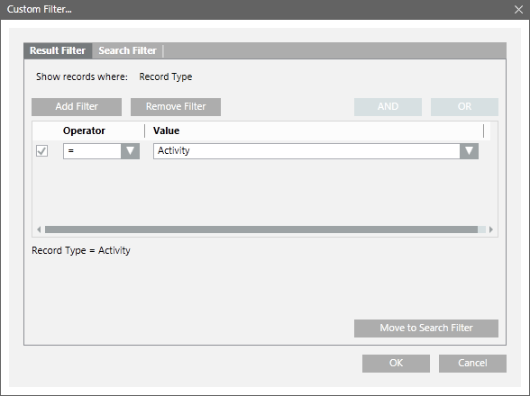

Apply Filters on Non-DateTime Columns
You can apply a result filter on the data set displayed in a log view or in the Detailed Log tab using any of the following techniques.
On applying a result filter on a column, a filter icon displays in the column header indicating that a filter is applied on the column.
Custom Filter
- Right-click the data value for which you want to apply the filter.
- Select Custom Filter.
- The Custom Filter Dialog Box displays. If you are applying the filter on columns of the detailed log tab, the Search Filter tab is not available.

- Click the Result Filter tab.
- Click the Add Filter button.
- An empty row with the Operator and Value fields displays.
- Select the operator value from the Operator drop-down list. In order to specify the value, you must either select a value from the Value drop-down list or type a value in the field.
NOTE: To add a filter for User column, ensure that you type a user value including double backslash. For example write the value as "[DomainName]\\[UserName]”. - The filter expression displays in the Filter Expression field.
- Click OK.
- The result filter is applied to the data set.
Quick Filter
- Right-click the data value for which you want to apply the filter.
- Select the Filter By option.
- The last three filters applied on a column are listed as menu options.
- Select any of the options on which you want to filter the data.
- The data is filtered according to the selected option.
Selection Filter
The Selection filter is applicable for filtering ENUM type of data. See List of ENUM columns section in custom filter for a list of columns of type ENUM.
Perform the following steps to apply the Selection filter:
- Click the inverted arrow on any column displaying ENUM data.
- The list of data entries for the column display as menu items.
- Select the check box pertaining to the entry on which you want to apply the filter.
NOTE: For faster retrieval of the data entries, you can type the value of the entry to be retrieved in the text box above the Selection filter. - Click OK.
- The view displays the data filtered on the basis of the selected entry.
If you select more than one data entry, the system displays the data matching either of the selected entries.
Drag-and-Drop
The drag-and-drop option is available only for filtering data displayed in a log view.
This option is not available when you are applying filters on the data displayed in the Detailed Log tab.
- From System Browser, drag an object that you want to set as a filter to the log view. You can also drag multiple objects from System Browser.
For this, ensure that the Manual navigation option in System Browser is checked.
- The log view displays the entries corresponding to the object. In case of multiple selection, the data matching either of the selected objects displays.

NOTE:
If you apply a result filter on a column with an existing result filter, the new filter condition replaces the older condition. In the absence of Show rights, the Value drop-down list displays all the corresponding event categories when you apply a result filter on the Event Category column. The records of only those event categories display whose Show rights have been granted, after a Result Filter is applied on the Event Category column.